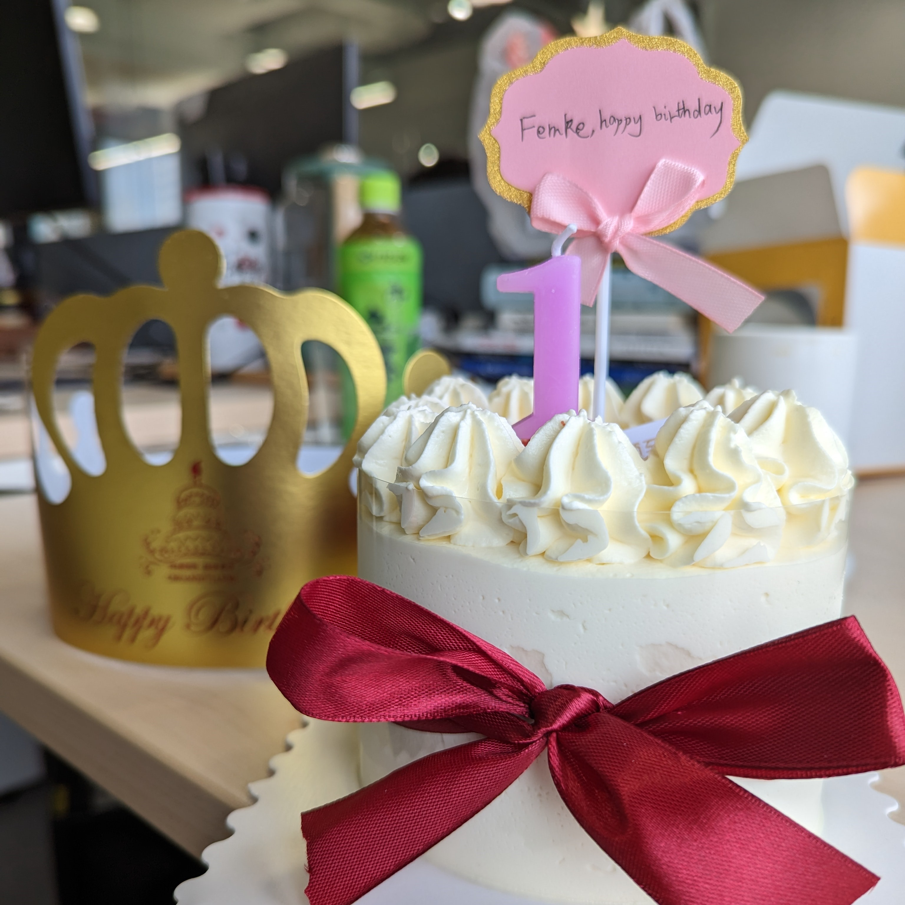
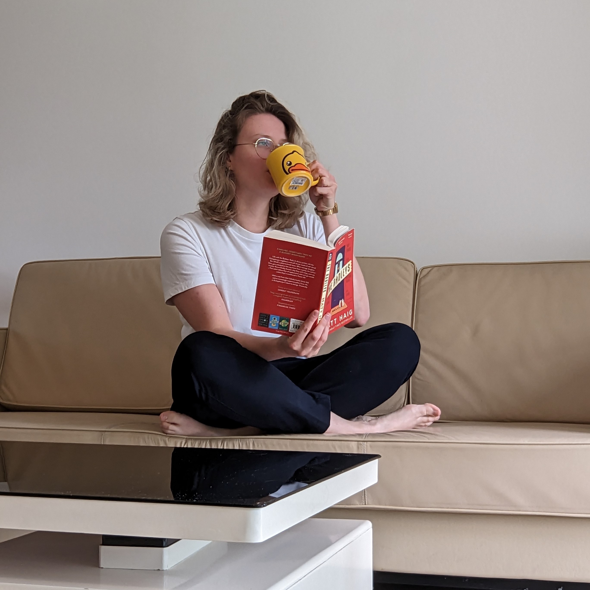
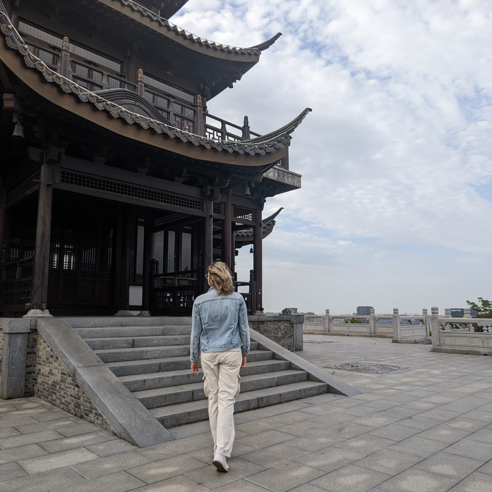
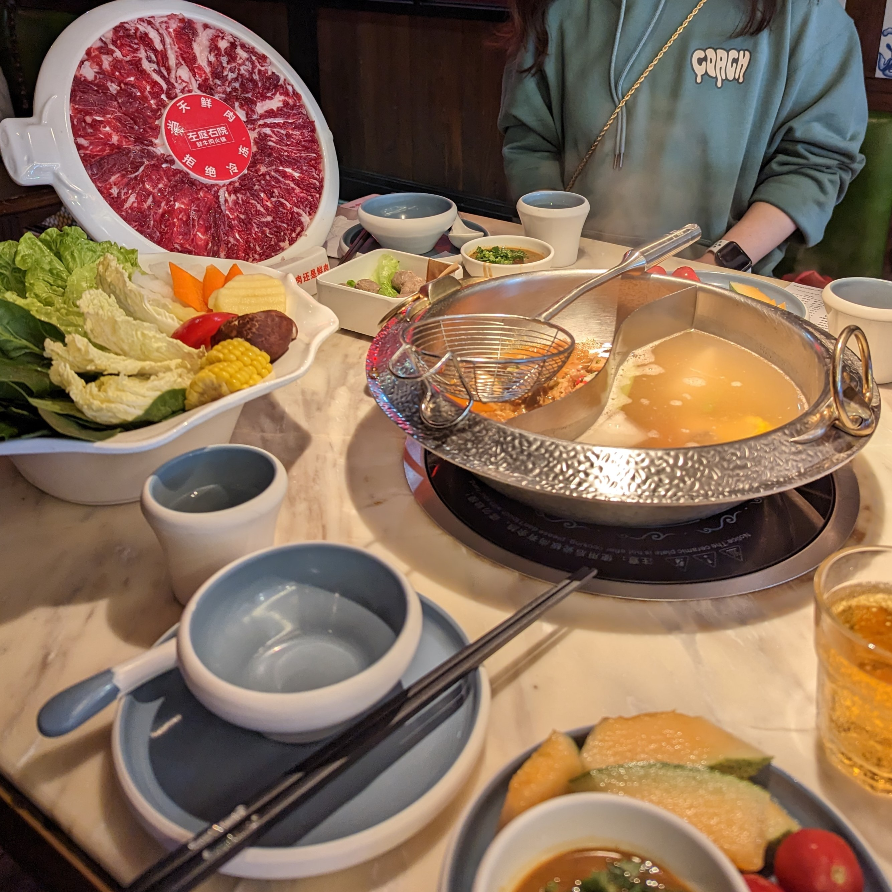
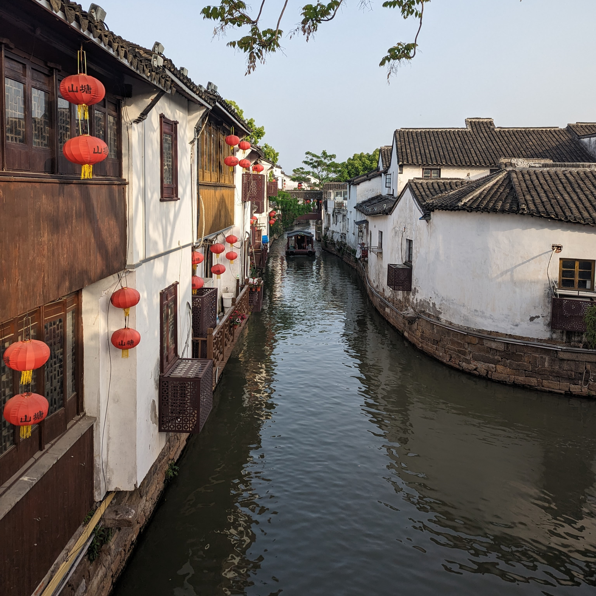
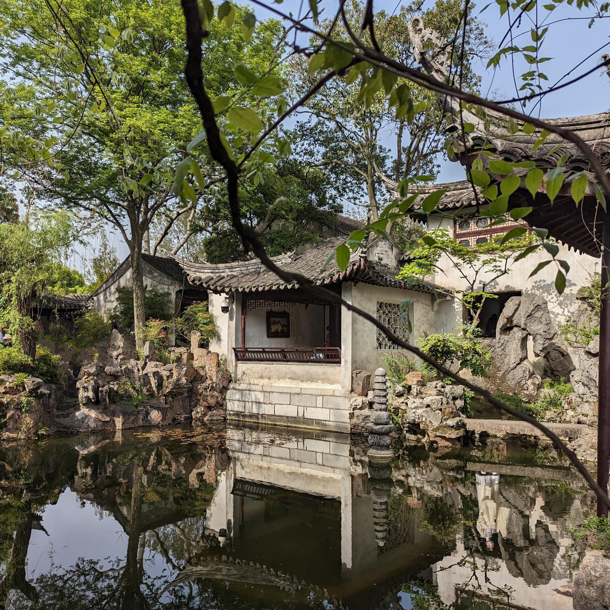
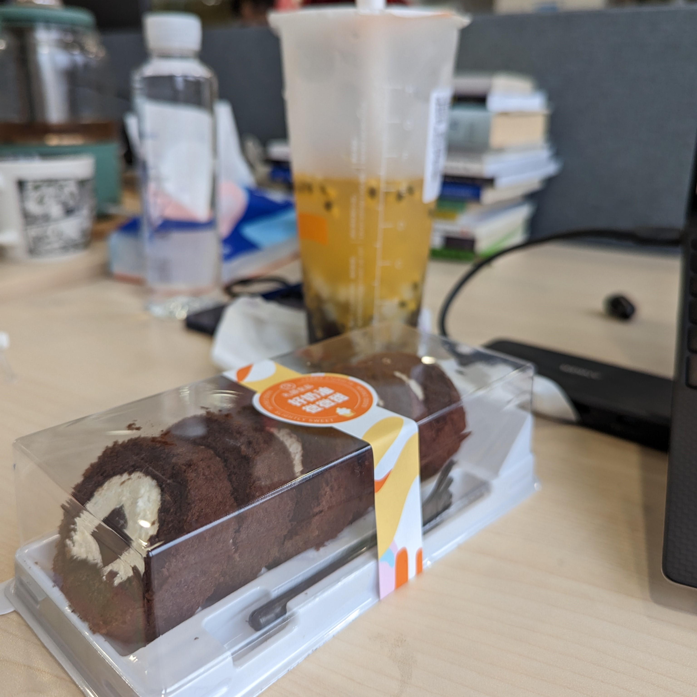
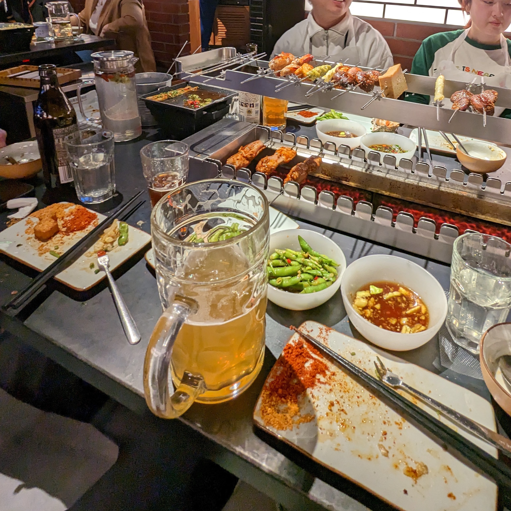

Happy Birthday
4 May 2023
We celebrated in a small way, but it was special in its own right. Wanning ordered a cake for me, and we went out for dinner to mark the occasion. Later, I indulged in a soothing shower and listened to some calming nature sounds on Spotify. It made me wonder, am I getting old? Although I have yet to count any gray hairs, perhaps my appreciation for the simpler things in life is a sign of a maturing perspective.
Mijn verjaardag vierden we op bescheiden wijze, maar het was speciaal op zijn eigen manier. Wanning bestelde een taart voor me en we gingen uit eten om de gelegenheid te vieren. Later nam ik een rustgevende douche en luisterde ik naar kalmerende natuurgeluiden op Spotify. Het deed me afvragen, word ik oud? Hoewel ik nog geen grijze haren heb geteld, is mijn waardering voor de eenvoudige dingen in het leven misschien een teken van een volwassen perspectief.

Rust roest (niet)
3 May 2023
No, I'm not always pondering the complexities of life. In fact, I often give my brain a boost of dopamine to satisfy its appetite. Today, I finally took some time for self-care, indulging in a refreshing shower, putting on some clean clothes, tidying up the house, and tackling the laundry. Sadly, it's the last day of my three-day holiday, but the reality is that I'll have to make up for two of those days by working on Saturday and Sunday upcoming weekends.
My Saturday stroll left me with sore calves that lasted for three days, so I wasn't exactly eager to leave the apartment. A friend had planned to visit me, but unfortunately, she fell ill at the last minute. Instead, I decided to spend the weekend relaxing indoors. The thought of navigating through the bustling crowds, language barriers, and cultural differences just didn't appeal to me at the moment. But there will be plenty more weekends to come, so there's no rush to force myself out of my comfort zone.
Natuurlijk denk ik niet altijd na over de complexiteit van het leven. Sterker nog, ik geef mijn brein vaak een dosis dopamine om zijn honger te stillen. Vandaag nam ik eindelijk wat tijd voor zelfverzorging, genietend van een verfrissende douche, het aantrekken van schone kleren, het opruimen van het huis en het aanpakken van de was. Helaas is het de laatste dag van mijn driedaagse vakantie, maar de realiteit is dat ik twee van die dagen moet inhalen door komend weekend op zaterdag en zondag te werken.
Mijn zaterdagse wandeling liet me achter met pijnlijke kuiten die drie dagen aanhielden, dus ik was niet bepaald enthousiast om het appartement te verlaten. Een vriendin had gepland om me te bezoeken, maar helaas werd ze op het laatste moment ziek. In plaats daarvan besloot ik het weekend binnenshuis te ontspannen. De gedachte om door de drukte van mensenmassa's, taalbarrières en culturele verschillen te navigeren sprak me op dat moment niet aan. Maar er zullen nog genoeg weekenden komen, dus er is geen haast om mezelf uit mijn comfortzone te dwingen.

Wulong Mountain
29 April 2023
层峦叠翠云海 观复 - "Layer upon layer of lush mountains and sea of clouds, a spectacular view to behold". Saturday, I took a stroll south. Through the bustling crowd, through the newly opened mall. I continued my way to the park, I caught a glimpse of the tranquil lake and watched the children playing on the beach. Continuing my journey southward. And then, I saw it - the Wulong Mountain. I was captivated by its beauty and couldn't resist the urge to climb it. So, I ascended 100 meters up the mountain until I found myself in a serene spot amidst a busy city. It was a perfect escape from the chaos below, and the view from the top was breathtaking.
层峦叠翠云海 观复 - "Lagen op lagen van weelderige bergen en een zee van wolken, een spectaculair uitzicht om te aanschouwen" Op zaterdag maakte ik een wandeling naar het zuiden. Door de drukte heen, door de net geopende winkelgalerij. Ik vervolgde mijn weg naar het park, waar ik een glimp opving van het serene meer en de kinderen die op het strand speelden. Mijn reis naar het zuiden ging verder en toen zag ik het - de Wulong-berg. Ik werd betoverd door zijn schoonheid en kon de drang om hem te beklimmen niet weerstaan. Dus klom ik 100 meter omhoog, tot ik mezelf vond op een rustige plek te midden van een drukke stad. Het was de perfecte ontsnapping aan de chaos beneden en het uitzicht vanaf de top was adembenemend.

Hotpot
15 April 2023
Hotpot is a fun and spicy experience for me. I always get surprised by what I find in the pot, and sometimes I regret it. Some dishes here are very adventurous and not for everyone. But I like to try new things and challenge myself. And some of them are actually delicious. Plus, I admire how they don't waste any part of the animal.
Hotpot is een leuke en pittige ervaring voor mij. Ik word altijd verrast door wat ik in de pot vind, en soms heb ik er spijt van. Sommige gerechten hier zijn erg avontuurlijk en niet voor iedereen. Maar ik hou ervan om nieuwe dingen te proberen en mezelf uit te dagen. En sommige zijn eigenlijk heerlijk. Bovendien bewonder ik hoe ze geen enkel deel van het dier verspillen

The Canal
15 April 2023
Suzhou is a beautiful city with many canals that remind me of Venice. I love exploring the old town, where modern buildings are not allowed to be higher than the ancient tower. The old town is surrounded by the Weichang River, which is part of the Grand Canal, the longest man-made waterway in the world.
Suzhou is een prachtige stad met veel kanalen die me aan Venetië doen denken. Ik hou ervan om de oude stad te verkennen, waar moderne gebouwen niet hoger mogen zijn dan de oude toren. De oude stad wordt omringd door de Weichang-rivier, die deel uitmaakt van het Grote Kanaal, de langste door mensen gemaakte waterweg ter wereld.

A Ghost
15 April 2023
This is the last picture from the Lingering Gardens. I edited out most of the people in this one. But I missed one spot in the water, so there's a ghost in this photo. This place is so beautiful, I wish I could stay here all day without the crowd.
Dit is de laatste foto van de Lingering Gardens. Ik heb de meeste mensen uit deze foto gehaald. Maar ik heb een plekje in het water gemist, dus er zit een spook in deze foto. Deze plek is zo mooi, ik zou hier graag de hele dag blijven zonder de menigte.
Lingering Garden
15 April 2023
Have you heard of the Lingering Garden in Suzhou? We visited it on Saturday. It's truly an extraordinary example of a Southern Style garden from the Qing Dynasty, recognized as a UNESCO World Heritage Site. Despite its limited space, the garden offers remarkable scenery that changes with every step, creating a unique experience.
Heb je ooit gehoord van de Lingering Garden in Suzhou? Het is een buitengewoon voorbeeld van een Zuidelijke stijl tuin uit de Qing-dynastie, die erkend is als UNESCO Werelderfgoed. Ondanks de beperkte ruimte biedt de tuin opmerkelijke landschappen die veranderen bij elke stap, waardoor er een unieke ervaring ontstaat.

Another Food Post
14 April 2023
Who doesn't love to indulge in some tasty treats every once in a while? At our office, we have a passionfruit bubble tea and chocolate cake available to satisfy our sweet cravings.
Wie houdt er nou niet van om af en toe te genieten van heerlijke zoetigheden? Bij ons op kantoor hebben we passievrucht bubble tea en chocoladetaart voor de zoete trek.
Green Green Grass
14 April 2023
The abundance of plants in the office creates a cozy and inviting atmosphere for work.
De overvloed aan planten in het kantoor zorgt voor een gezellige en uitnodigende werksfeer.

Cheers
12 April 2023
I was excited to try authentic Chinese barbecue, and the experience did not disappoint. The meat was succulent, juicy, and perfectly cooked, with just the right amount of seasoning. They ordered me an extra-large beer, which made me feel right at home. When I return home, I will have to be vegetarian for a few months to compensate. As we sat and talked, we were given cooling packs to stick to our foreheads to avoid overheating from the heat of the grill. I sipped on my beer, enjoying the flavor and the company, and feeling grateful for this new experience in a foreign land. In the end, I didn't manage to finish my beer, but the memory of that night will stay with me for a long time.
Authentieke Chinese barbecue stelde niet teleur. Het vlees was sappig, mals en perfect gekookt, met precies de juiste hoeveelheid kruiden. Ze bestelden voor mij een extra groot biertje, waardoor ik me meteen thuis voelde. Wanneer ik thuis kom ,moet ik maar een paar maanden vegetarier worden om te compenseren.Terwijl we zaten te praten kregen we koelpacks om op ons voorhoofd te plakken om te voorkomen dat we oververhit raakten van de hitte van de grill. Ik dronk van mijn biertje, genietend van de smaak en het gezelschap, en voelde me dankbaar voor deze nieuwe ervaring in een vreemd land. Uiteindelijk slaagde ik er niet in om mijn biertje op te drinken, maar de herinnering aan die avond zou nog lang bij me blijven.
Game On
11 April 2023
Who needs to go home when you can play basketball in the office? There's even a designated sports area, and I heard there's a group class on Friday afternoons. I'm still adjusting to the new time zone, but I've been able to get some decent sleep at night.
Waarom zou je überhaupt overwegen om naar huis te gaan als je in het kantoor kunt basketballen? Er is zelfs een speciaal aangewezen sportgedeelte en naar verluidt is er op vrijdagmiddag een groepsles. Ik moet nog steeds wennen aan de nieuwe tijdzone, maar ik heb al een paar redelijke nachten slaap gehad.
Office With a View
10 April 2023
Today was my first day in the office, which is located on the eighth floor of a building that houses several medical companies. The office is filled with bright sunlight and lots of green plants, and my desk is conveniently located right next to a window. There are plenty of snacks and excellent coffee available, and there's even a separate room where you can take a nap and two massage chairs. Most people arrive just after 9 a.m. and leave around 6 or 7 p.m., with a few exceptions. I also started working in the lab today, and I will continue my work there tomorrow. .
Vandaag was mijn eerste werkdag op kantoor, dat zich op de achtste verdieping van een gebouw bevindt waarin verschillende medische bedrijven zijn gevestigd. Het kantoor is gevuld met veel zon en veel groene planten, en mijn bureau staat handig naast een raam. Er zijn volop snacks en uitstekende koffie verkrijgbaar, en er is zelfs een aparte ruimte waar je kunt slapen en waarin twee massagestoelen staan. De meeste mensen komen net na 9 uur 's ochtends binnen en vertrekken rond 6 of 7 uur 's avonds, met enkele uitzonderingen. Ik ben vandaag ook begonnen met werken in het lab en zal daar morgen mee verdergaan.
What's in the box?
9 April 2023
Mengjie was incredibly kind to lend me a pan and even ordered some food for me. It was pasta in a box with the sauce inside a plastic package. I hope my Italian friends won't kill me. It wasn't bad, but a can of chopped tomatoes could have done the same job. Nevertheless, I'm very grateful to everyone who helped me get some food for the next few days.
Mengjie was zo vriendelijk om mij een pan te lenen en zelfs wat eten voor me te bestellen. Het was pasta in een doos met de saus in een plastic verpakking in plaats van een glazen pot. Ik hoop dat mijn italiaanse vrienden mij niet vermoorden terug in Londen. Het was niet slecht, maar een blikje gehakte tomaten hetzelfde werk had kunnen doen. Desalniettemin ben ik erg dankbaar voor iedereen die me heeft geholpen om wat eten te krijgen voor de komende dagen.
Home Away from Home
8 April 2023
I went for a walk on a Saturday morning after a good night's sleep. The area had twenty flats that all looked the same. The pavements had been cleaned that morning and everything looked very tidy.
Ik maakte op zaterdagochtend na een lange nachtrust een wandeling buiten het terrein. Er zijn 20 identieke flats in het gebied. 's Ochtends worden alle stoepen schoongemaakt, waardoor alles heel schoon is.
It's Fruit
8 April 2023
On Saturday morning, Grace stopped by to drop off some more food before she was heading off to Shanghai for the weekend. She was so kind! Among the goodies she brought was a type of fruit I had never seen before. I don't know its name, but I can say with confidence that it was a 10/10.
Op zaterdagochtend kwam Grace langs om wat meer eten af te leveren voordat ze vertrok naar Shanghai voor het weekend. Ze was zo aardig! Onder de lekkernijen die ze meebracht, zat een soort fruit dat ik nog nooit eerder had gezien. Ik weet niet hoe het heet, maar ik kan met vertrouwen zeggen dat het een 10/10 was.
A Snack
7 April 2023
On our way to the company, I snacked on some beef-flavored Cheetos. When I arrived, we attempted to set up my phone for my two-month stay in China. Unfortunately, none of the Chinese apps were compatible with my phone, which meant that I couldn't make any payments or order food. Luckily, Grace came to my rescue and kindly helped me get some food to last me through the weekend. Fortunately, the company will be providing me with a phone on Monday that I can use for the rest of my stay here.
Ik had deze rundvlees-cheetos als snack tijdens mijn reis naar het bedrijf. Bij aankomst probeerden we mijn telefoon in te stellen voor mijn verblijf hier de komende 2 maanden. Helaas bleken geen van de Chinese apps compatibel met mijn telefoon, wat betekende dat ik geen betalingen kon doen of eten kon bestellen. Gelukkig was Grace zo lief om me te helpen aan wat eten om het weekend door te komen. Het bedrijf zal me op maandag een telefoon geven die ik kan gebruiken voor de rest van mijn verblijf hier.
Ready for takeoff
6 April 2023
And so the adventure begins! After a long 12-hour flight, I finally landed in Shanghai. I didn't get much sleep on the plane, but I was fortunate enough to have friendly neighbors despite being one of the only Dutch people on board. Upon arrival, one of the company's drivers was waiting for me to pick me up from the airport and drive me to Suzhou.
En zo begint het avontuur! Na een lange vlucht van 12 uur landde ik eindelijk in Shanghai. Ik heb niet veel kunnen slapen in het vliegtuig, maar ik had gelukkig vriendelijke buren, ook al was ik een van de weinige Nederlanders aan boord. Bij aankomst stond een van de chauffeurs van het bedrijf op me te wachten om me op te halen van de luchthaven en me naar Suzhou te rijden.